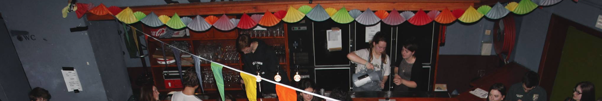
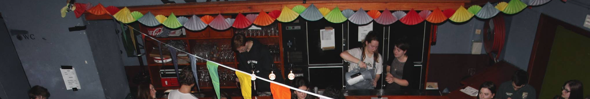

A fakbar is a bar that is run by members from student associations. According to the Femish Online Dictionay, it is a student cafe of a certain faculty, where the beer is usually cheap.
The fakbar functions as a meeting place for people who want to get to know fellows students from their degree. Since the fakbars are managed and opened by student volunteers, the prices for consumptions can be kept as democratic as possible. This makes fakbars popular spots in Leuven.
The history of fakbars in Leuven goes back many years. Fakbars play important role in the city's nightlife industry and have become an essential part of university life. The word "fakbar" is derived from the Flemish "faculteitsbar" (which used to be written with a k), literally meaning "faculty bar".